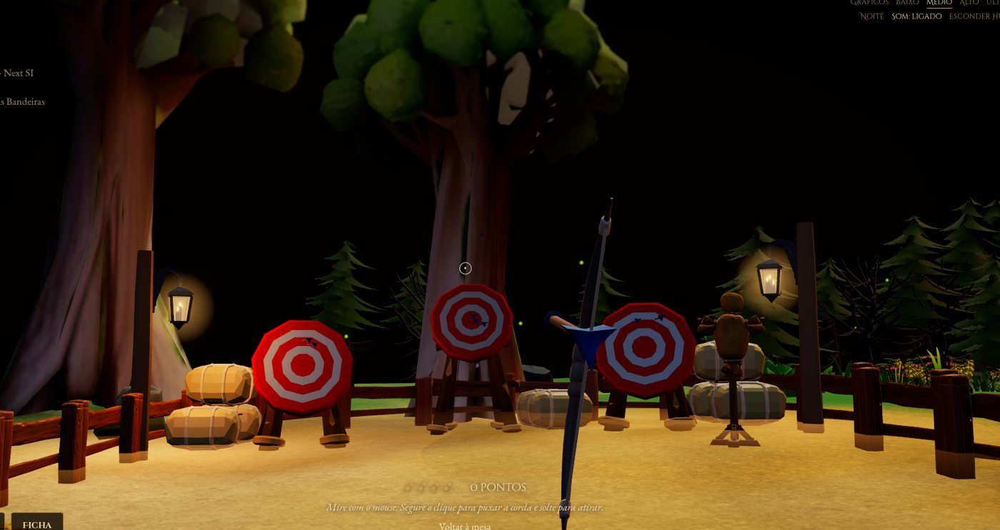

Crônicas de Murilo
Um currículo contado como campanha de RPG de mesa: um tabuleiro 3D em miniatura, sobre a mesa de uma taverna, onde o herói anda de parada em parada rolando o d20 e cada parada é um capítulo da carreira. Roda no navegador, feito com three.js, e quase tudo nele dá para clicar, pegar ou jogar.
Feito em 7 dias · setembro e outubro de 2026
I · A ideia
O currículo vira uma campanha
Em vez de uma página com seções, a carreira é uma jornada pelo mapa. Rola-se o d20 na mesa e o peão do herói anda casa a casa pela trilha até a próxima parada; ali a câmera voa até o lugar e o capítulo abre num pergaminho. Os textos vêm do portfólio, recontados como crônica.
- PrólogoVila de Agudosonde o herói começa, na praça do chafariz
- Capítulo IA Forja da I-SINCa mina e o quartel: o ERP fiscal e as regras de negócio
- Capítulo IIA Ponte de Bauru · Next SIa travessia do rio
- Capítulo IIIO Castelo das Duas Bandeiraso castelo da vila do sol, com os estandartes das empresas
- EpílogoO Farol do Portoos contatos: LinkedIn, GitHub, WhatsApp e e-mail
Em volta do tabuleiro, a mesa completa a ficha: as cartas são os projetos (Velox CRM, Beauty Exp, Dialogi, SigmaCX e outros), viram na frente de quem clica; a ficha de personagem é um pergaminho com a crônica, os atributos (Engenharia de Software 18, Full Stack 17, Carisma gamer 20…) e os reinos servidos, com selo de cera; os frascos da bruxa são as tecnologias, cada um na cor da marca.
II · O que dá para fazer
Quase tudo responde
A regra do projeto foi que o mapa não fosse cenário: cada canto tem alguma coisa para mexer. As principais:
Dados de verdade
d20, d6 e d8 com física própria: pega, arrasta e arremessa; rolam morro abaixo, caem no rio, batem nas casas e param na face que ficou para cima. Segurado perto de uma vela por 2 s, o dado pega fogo e ilumina a cidade.
Coisinhas da mesa
Moedas, chave, poções e caneca com física cannon-es: caem, quicam e param como pararem, sem correção no fim.
Caldeirão da bruxa
Na clareira da floresta sombria: cada frasco é uma tecnologia; derramado, a poção toma a cor dele. Três frascos malditos disparam a sequência de terror.
Cozinha do acampamento
Jogar três comidas no caldeirão da fogueira forma uma receita: o caldo ferve, solta vapor e um prato voa até o banco.
Arco e flecha
No campo de treino a câmera desce para a linha de tiro, em primeira pessoa. Segurar puxa a corda; a flecha voa com gravidade e crava no que acertar. Canecas e garrafas no banco tombam e estouram.
Mina e vagonete
O vagonete entra no túnel e volta com uma carga sorteada: carvão, metais, cristais (o diamante é raríssimo) ou dinamite com o pavio aceso, que explode no pátio se não for mandada de volta a tempo.
Barco, horta e água
Clicar no barco o faz balançar; três cliques rápidos e ele naufraga. A horta é colhida legume a legume. Um toque na água faz ondinha.
Dia e noite
A troca leva ~4 s: os postes acendem um a um, as janelas vão se acendendo, a música cruza, corujas na vila e uma voz no fundo da mata.
Passeio em primeira pessoa
Um modo extra, só para explorar: o corpo é o arqueiro do KayKit, anda, corre, pula, sobe a ponte, o píer e as escadas do castelo, e esbarra nas coisas.
III · Os lugares
Um mundo em miniatura
O layout nasceu numa grade de hexágonos (fácil de desenhar e de posicionar), mas o chão é um terreno contínuo gerado dela: os níveis das células viram morros e platôs suaves, o rio e a estrada viram curvas, a costa ganha contorno orgânico. Tudo na escala de miniatura: uma porta tem a altura de uma pessoa (~0,15), uma caneca ~3 cm. Cada lugar tem o seu clima.
O castelo do reino do sol
O capítulo III mora num castelo inspirado em Corona, o reino da Rapunzel em Enrolados, com um pé na Corte Primaveril. Ele fica num platô de pedra no canto do tabuleiro, sobe em andares ovais com escadarias e tem um pátio de feira e torres de telhado lilás. Os estandartes das duas empresas pendem das torres do portão, e um jardim simétrico com fonte de jarros ocupa o terraço ao lado. Na frente, a vila do sol: bandeirinhas e cordões de luzinhas cruzando a praça, pétalas e folhas douradas caindo, lanternas flutuando no céu à noite, a taverna com um jardim de cerveja bávaro e o mastro de maio listrado. A primavera não começa de repente: as árvores vão dourando aos poucos a partir do rio.
A floresta da bruxa
A oeste, a mata fecha: pinheiros escuros, uma copa invisível que joga sombra na região inteira, névoa baixa, vaga-lumes, fadas neon com rastro de purpurina e cogumelos que brilham. Na clareira, o caldeirão ao pé de uma árvore enorme, com duas estantes de frascos, um por tecnologia, na cor da marca. Derramar três frascos malditos acorda a floresta: a tela distorce, os sons sobem em camadas e algo corre atrás de você até o susto. Gnomos passam rindo, e uma flecha atirada na mata volta voando por cima das árvores.

O campo de treino e o arco
Na vila do moinho, um pátio comprido sobre o trigo: alvos com feno, a linha de tiro com cerca de corda e bandeirinhas, o suporte de armas, um boneco de palha. Clicando, a câmera desce para a linha de tiro e o arco aparece na mão. A flecha crava no anel do alvo, no boneco ou no chão; canecas e garrafas no banco tombam e estouram; uma flechada quebra a lanterna do poste.
Agudos
Onde o herói começa: praça de pedras irregulares, chafariz de jarros com barulhinho d'água, barraca de toldo listrado, estátuas na saída da estrada.
O acampamento
No vale, no fim da trilha da bruxa: tenda, fogueira, mesa de mapas, canto de dormir e o caldeirão da cozinha.
A mina
A boca escorada no paredão, trilhos e o vagonete das cargas sorteadas; a dinamite estoura no pátio com poeira e estilhaços.
Rio, ponte e cachoeira
A nascente no alto da serra desce em queda até um poço com espuma e névoa; a ponte de pedra leva ao capítulo II.
O porto
Água com profundidade e reflexo, o farol com dois fachos girando, o barco de tábuas com vela ao vento e o deck de pesca.
A mesa em volta
A sala escura da taverna, velas, moedas, poções, mapa, as cartas dos projetos e a ficha em pergaminho.
IV · Como é feito
Feito à mão, peça por peça
Não tem motor de jogo por trás: é three.js, a biblioteca de 3D do navegador, com todo o resto escrito sob medida para este projeto. Cada lugar e cada brincadeira é uma peça própria do código, que monta o seu canto do tabuleiro e se anima sozinha; uma peça central junta tudo e cuida da câmera, dos cliques e do dia e da noite. Os prédios, árvores e objetos vêm de pacotes de modelos prontos, combinados e ajustados até virarem um mundo só.
Muita coisa foi resolvida no jeitinho. As lonas, os estandartes e a ficha do herói são pintados pelo próprio código, sem baixar imagem. A roda do moinho veio grudada na casa e foi separada para poder girar; as folhas do portão do castelo foram giradas para ele ficar aberto; a corda do arco foi trocada por uma que estica de verdade. E as luzes da noite, das velas aos postes, já nascem todas apagadas na carga, porque acender uma luz nova no meio do jogo faria a tela engasgar.
V · Desempenho
Bonito, mas sem travar
O site tem que abrir bonito. Otimização que deixa algo feio não serve.a regra de ouro do projeto
A primeira imagem é o mapa inteiro, de cima, com milhares de objetos ao mesmo tempo, e quase todos dá para clicar. Num jogo de verdade o mundo aparece aos poucos; aqui ele aparece todo de uma vez, no navegador. Esse foi o maior desafio do projeto.
Por que pode travar num PC fraco
Um jogo instalado conversa direto com a placa de vídeo. No navegador, não: cada coisa desenhada passa antes pelo JavaScript, pela checagem de segurança do navegador e por uma camada que traduz o pedido para o sistema da máquina, e só então chega à placa. Tudo isso roda numa linha só de trabalho, dividida com o resto da página e com as outras abas abertas. Num computador sem placa de vídeo, o vídeo integrado ainda divide a memória com o processador.
Por isso, aqui o que pesa não é a beleza dos modelos, é a quantidade de coisas. A placa desenha milhões de triângulos sem esforço; quem sofre é o processador, que precisa montar um pedido para cada objeto, a cada quadro. Jogos grandes resolvem isso com equipes inteiras e anos de trabalho, mostrando só o pedaço do mundo perto do jogador. Este é uma maquete: a graça é ver o mundo todo de uma vez.
O que foi feito para ficar leve
Ele foi construído num notebook de trabalho, não numa máquina de jogo: um Core i5 com uma RTX 3050 de notebook e o vídeo integrado da Intel. Por isso o jogo se cuida sozinho. De longe, os objetos pequenos deixam de ser desenhados e cada região vira uma peça só; o que está parado deixa de ser recalculado; só as luzes perto do que você olha entram na conta. Nada disso muda o que se vê, e o jogo ficou cerca de duas vezes mais leve.
Na primeira visita ele olha a placa de vídeo do computador. Sem placa ou com vídeo integrado, abre nos gráficos mínimos e avisa antes de deixar subir, dizendo o que pode acontecer. Se ainda assim ficar pesado nos primeiros segundos, ele baixa sozinho um nível.
VI · Créditos
Quem fez as peças
Nenhum modelo do mapa foi gerado: cada casa, árvore, pedra e barril foi procurado, testado e escolhido a dedo por Murilo, em pacotes e sites de modelos 3D, e depois encaixado no mundo com ajustes feitos para este projeto: cores, tamanhos, peças separadas, materiais refeitos. A ideia, a direção de cada lugar e a revisão de cada cena, print a print, também são dele, com a IA como companheira de código, do jeito que ele trabalha no dia a dia. Os modelos vêm destes criadores, a quem fica o crédito:
- KayKit (Kay Lousberg, CC0): Medieval Hexagon, Adventurers 2.0, Board Game Bits, Fantasy Weapons, Resource Bits, RPG Tools, Forest Nature
- Quaternius: Stylized Nature MegaKit e Fantasy Props MegaKit (versões grátis)
- Saturniccc: Stylized Stone Bridge (CC-BY 4.0)
- MiloB: Stylized Water Fountain (CC-BY 4.0)
- Adeel Qadir: Camping Tent (CC-BY 4.0)
- LOLIPOP: Farm plants e Undergrowth pack (CC-BY 4.0)
- exsesone: Stylized Fence (CC-BY)
- Cenji: Fantasy Crystal Pack
- Binbun3D: Stylized Explosion FX (CC0), reescrito para three.js
- Freesound: ambientes e efeitos (corujas, mata à noite, caldeirão, gritos, whoosh e outros), creditados no código